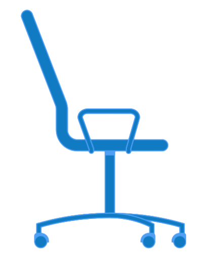

I am always thinking about how much nicer sitting at my desk would be and much more productive i would be if I had a chair that moves and adjusts the way I want. I currently use a wooden chair which is very uncomfortable so having an office chair
is something that i really desire